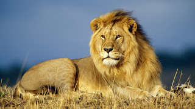

El león (Panthera leo) es un mamífero carnívoro de la familia de los félidos y una de las 4 especies del género Panthera. Algunos machos, excepcionalmente grandes, llegan a pesar hasta 250 kg,3 lo que los convierte en el segundo félido viviente más grande después del tigre. Los leones salvajes viven en África subsahariana y Asia, con una población en peligro crítico al noroeste de la India, habiendo desaparecido del nortede África, de Oriente Próximo y del oeste de Asia en tiempos históricos. Hasta finales del Pleistoceno, hace aproximadamente 10 000 años, de los grandes mamíferos terrestres, el león era el más extendido tras los humanos. Su distribución cubría la mayor parte de África, gran parte deEurasia, desde el oeste de Europa hasta la India, y en América, desde el río Yukón hasta el sur de México.
